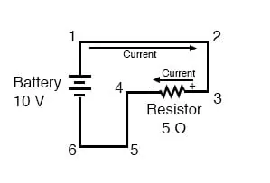

When using conventional current flow, we can trace the direction of the current in the same circuit by starting at the positive (+) terminal and going to the negative (-) terminal of the battery, the only source of voltage in the circuit. From this, we can see that the current is flowing clockwise, from point 1 to 2 to 3 to 4 to 5 to 6 and back to 1 again.
As the current encounters the 5 Ω resistance, voltage is dropped across the resistor’s ends. The polarity of this voltage drop is positive (+) at point 3 with respect to point 4.
We can mark the polarity of the resistor’s voltage drop with negative and positive symbols, in accordance with the direction of current; whichever end of the resistor the current is entering is positive with respect to the end of the resistor it is exiting:

We could make our table of voltages a little more complete by marking the polarity of the voltage for each pair of points in this circuit:
Between points 1 (+) and 4 (-) = 10 volts Between points 2 (+) and 4 (-) = 10 volts Between points 3 (+) and 4 (-) = 10 volts Between points 1 (+) and 5 (-) = 10 volts Between points 2 (+) and 5 (-) = 10 volts Between points 3 (+) and 5 (-) = 10 volts Between points 1 (+) and 6 (-) = 10 volts Between points 2 (+) and 6 (-) = 10 volts Between points 3 (+) and 6 (-) = 10 volts
While it might seem a little silly to document polarity of voltage drop in this circuit, it is an important concept to master. It will be critically important in the analysis of more complex circuits involving multiple resistors and/or batteries.
It should be understood that polarity has nothing to do with Ohm’s Law: there will never be negative voltages, currents, or resistance entered into any Ohm’s Law equations! There are other mathematical principles of electricity that do take polarity into account through the use of signs (+ or -), but not Ohm’s Law.
REVIEW: